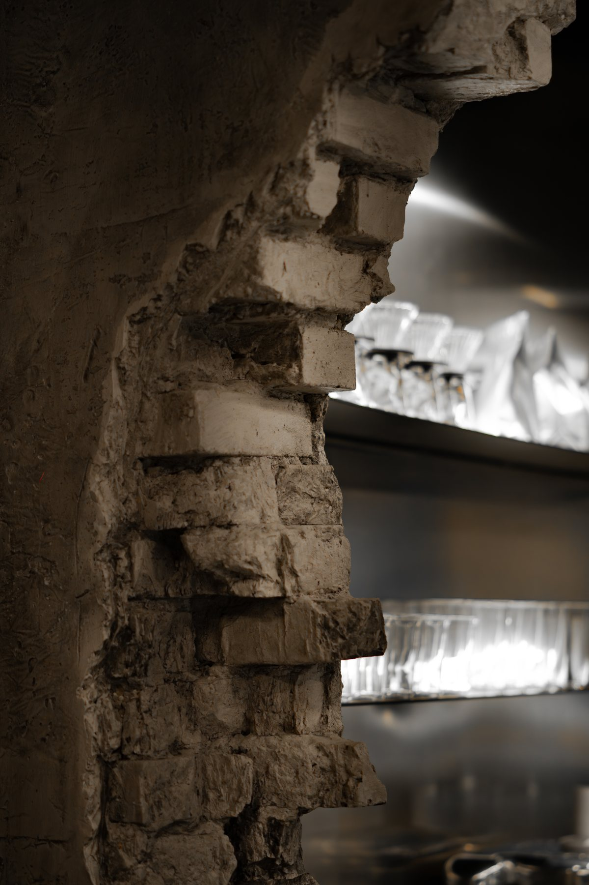
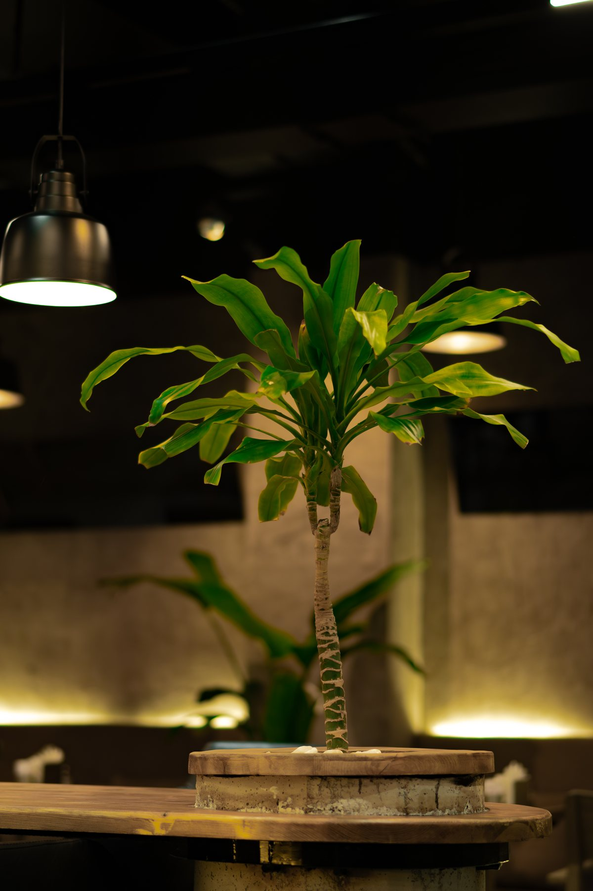

Акции
О ресторане
HOŞ Lounge
Пространство для тех, кто ценит вкус, атмосферу и безупречный сервис. Мы сочетаем традиции восточного гостеприимства с современной авторской кухней.
Онлайн-заказhoslounge.onlineНаведите камеру телефона на код и оформите заказ на нашем сайте
Открыты ежедневно8:00 – 23:00
Бронирование+993 71 66 77 77

